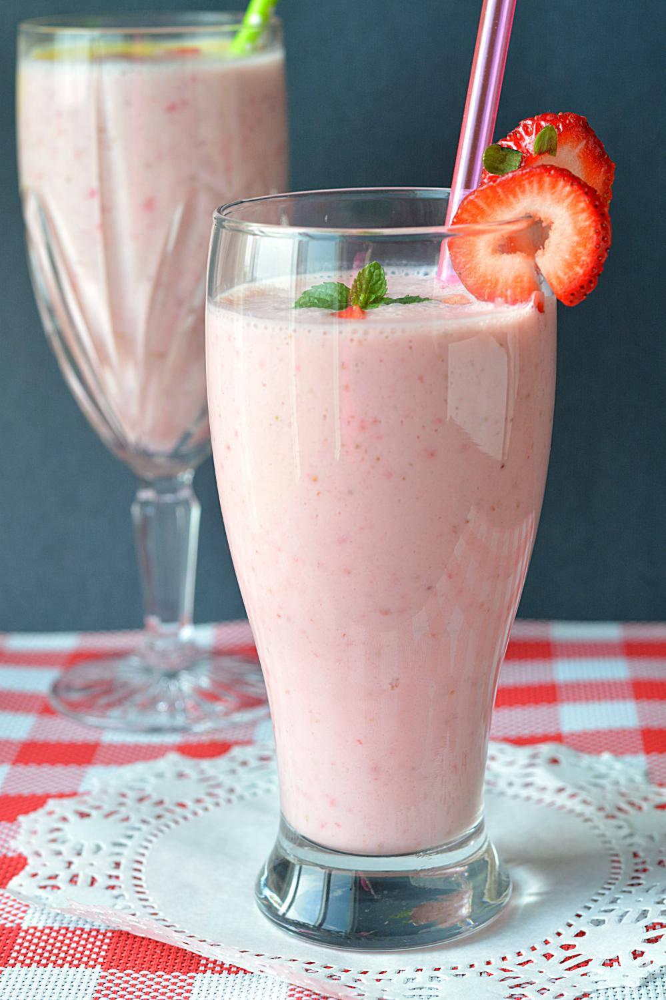

Chole Bhature

Description
This banana milkshake recipe includes sweet bananas and coconut milk for a
rich and creamy consistency that everyone (especially kids) will love.
Plus we add a bit of vanilla and cinnamon for an extra delicious drink
that's perfect for breakfast, as a snack, or even for a healthy dessert.
This banana shake recipe is vegan.
- 1-2 bananas (preferably frozen)
- 1 cup (8 ounces) ice
- 1/2 cup (4 ounces) milk
- 2 1/2 tsp sugar, sugar substitute, or honey
- 1 scoop (3 ounces) vanilla ice cream
- 1 1/2 tsp vanilla extract (optional)
- 4-6 chopped almonds (optional)
-
Any additional flavors you may desire (mango, pineapple, spinach, kale,
blueberry, etc.)